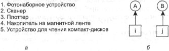

Как мы видели, уклонение от взаимоблокировок, в сущности, невозможно, потому
что оно требует наличия никому не известной информации о будущих процессах.
Тогда возникает справедливый вопрос: как же реальные системы избегают попадания
в тупики? Для того чтобы ответить на этот вопрос, вернемся назад к четырем условиям,
сформулированным в [70] (см. раздел «Условия взаимоблокировки» данной
главы), и посмотрим, смогут ли они дать нам ключ к разрешению проблемы. Если
мы сможем гарантировать, что хотя бы одно из этих условий никогда не будет выполнено,
тогда взаимоблокировки станут конструктивно невозможными [150].
Атака условия взаимного исключения
Сначала попробуем атаковать условие взаимного исключения. Если в системе нет
ресурсов, отданных в единоличное пользование одному процессу, мы никогда не
попадем в тупик. Но в равной степени понятно, что если позволить двум процессам
одновременно печатать данные на принтере, воцарится хаос. Используя подкачку
выходных данных для печати, несколько процессов могут одновременно генерировать
свои выходные данные. В такой модели только один процесс, который фактически
запрашивает физический принтер, является демоном
принтера. Так как демон не запрашивает никакие другие ресурсы, для принтера
мы можем исключить тупики.
К сожалению, не все устройства поддерживают подкачку данных (таблицу процессов
невозможно подкачивать с диска). Кроме того, конкуренция за дисковое пространство
для подкачки сама по себе может привести к тупику. Что получится, если два процесса
заполнили своими выходными данными каждый по половине дискового пространства,
отведенного под подкачку данных, и ни один из них не закончил вычисления? Демон
может быть запрограммирован так, что начнет печать, не дожидаясь подкачки всех
выходных данных, и принтер тогда простоит впустую в том случае, если вычисляющий
процесс решил подождать несколько часов после первого пакета выходных данных.
По этой причине обычно демоны программируют так, что они начинают печать только
после того, как файл выходных данных целиком станет доступен. В этом случае
мы получаем два процесса, каждый из которых обработал часть выходных данных,
но не все и не может продолжать вычисления дальше. Ни один из двух процессов
никогда не завершится, так что произошла взаимоблокировка на диске.
Тем не менее в этом проглядывает росток часто применяющегося решения. Избегайте
выделения ресурса, когда это не является абсолютно необходимым, и пытайтесь
обеспечить ситуацию, в которой фактически претендовать на ресурс может минимальное
количество процессов.
Атака условия удержания и ожидания
Второе из условий, сформулированных Коффманом (Coffman) и другими, кажется,
все же подает надежду. Если мы сможем уберечь процессы, занимающие некоторые
ресурсы, от ожидания остальных ресурсов, мы устраним ситуацию взаимоблокировки.
Один из способов достижения этой цели состоит в требовании, следуя которому
любой процесс должен запрашивать все необходимые ресурсы до начала работы. Если
все ресурсы доступны, процесс получит все, что ему нужно, и сможет работать
до успешного завершения. Если один или несколько ресурсов заняты, процессу ничего
не предоставляется, и он непременно попадает в состояние ожидания.
Первая проблема при этом подходе заключается в том, что многие процессы не
знают, сколько ресурсов им понадобится, до тех пор, пока не начнут работу. На
самом деле, если бы они обладали подобными сведениями, то мог бы использоваться
и алгоритм банкира. Другая проблема состоит в том, что при этом методе ресурсы
не будут использоваться оптимально. Возьмем, например, процесс, который читает
данные с входной ленты, анализирует их в течение часа и затем пишет выходную
ленту, а заодно и чертит результаты на плоттере. Если все ресурсы нужно запрашивать
заранее, то процесс в течение часа не позволит работать накопителю на магнитной
ленте и принтеру.
И все-таки некоторые пакетные системы на мэйнфреймах требуют, чтобы пользователи
объявляли список всех ресурсов в первой строке каждого задания. Затем система
немедленно запрашивает все ресурсы и сохраняет их до окончания задачи. Этот
способ накладывает ограничения на деятельность программиста и занимается расточительством
ресурсов, зато предотвращает безвыходные тупиковые ситуации.
Немного отличный метод, позволяющий нарушить условие удержания и ожидания,
заключается в наложении следующего требования на процесс, запрашивающий ресурс:
процесс сначала должен временно освободить все используемые им в данный момент
ресурсы. Затем этот процесс пытается сразу получить все необходимое.
Атака условия отсутствия принудительной выгрузки ресурса
Попытка исключить третье условие (нет принудительной выгрузки ресурса) подает
еще меньше надежд, чем устранение второго условия. Если процесс получил принтер
и в данный момент печатает выходные данные, насильственное изъятие принтера
по причине недоступности требуемого плоттера в лучшем случае сложно, а в худшем
— невозможно.
Атака условия циклического ожидания
Остается только одно условие. Циклическое ожидание можно устранить несколькими
способами. Один их них: просто следовать правилу, гласящему, что процессу дано
право только на один ресурс в конкретный момент времени. Если нужен второй ресурс,
процесс обязан освободить первый. Но подобное ограничение неприемлемо для процесса,
копирующего огромный файл с магнитной ленты на принтер. Другой способ уклонения
от циклического ожидания заключается в поддержке общей нумерации всех ресурсов,
как показано на рис. 3.11, а. Тогда действует следующее правило: процессы могут
запрашивать ресурс, когда хотят этого, но все запросы должны быть сделаны в
соответствии с нумерацией ресурсов. Процесс может запросить сначала принтер,
затем накопитель на магнитной ленте, но не может сначала потребовать плоттер,
а затем принтер.

Рис. 3.11. Пронумерованные
ресурсы (а); граф ресурсов (б)
При выполнении такого правила граф распределения ресурсов никогда не будет
иметь циклов. Покажем, что это так, в случае двух процессов (рис. 3.11, б).
Мы можем попасть в тупик, только если процесс А запросит ресурсу, а процесс
В обратится к ресурсу i. Предположим, что ресурсы i и j
различны, значит, они имеют разные номера. Если i>j, тогда процессу
А не позволяется запрашивать ресурс j, потому что его номер меньше,
чем номер уже имеющегося у него ресурса. Если же i<j, тогда процесс
В не может запрашивать ресурс i, потому что этот номер меньше
номера уже занятого им ресурса. Так или иначе, взаимоблокировка невозможна.
При работе с несколькими процессами сохраняется та же самая логика. В каждый
момент времени один из предоставленных ресурсов будет иметь наивысший номер.
Процесс, использующий этот ресурс, уже никогда не запросит другие занятые ресурсы.
Он или закончит свою работу или, в худшем случае, запросит ресурс с еще большим
номером, а любой такой ресурс окажется доступен. В итоге процесс завершит работу
и освободит свои ресурсы. На этот момент сложится ситуация, когда ресурс с высшим
номером уже занят каким-то другим процессом, который также сможет закончить
свою работу. То есть существует алгоритм, по которому все процессы завершатся
без попадания в тупик.
Вариантом этого алгоритма является схема, в которой отбрасывается требование
приобретения ресурсов в строго возрастающем порядке, но сохраняется условие,
что процесс не может запросить ресурсы с меньшим номером, чем уже у него имеющиеся.
Если процесс на начальной стадии запрашивает ресурсы 9 и 10, затем освобождает
их, то это равнозначно тому, как если бы он начал работу заново, поэтому нет
причины теперь запрещать ему запрос ресурса 1.
Несмотря на то что систематизация ресурсов с помощью их нумерации устраняет
проблему взаимоблокировки, бывают ситуации, когда невозможно найти порядок,
удовлетворяющий всех. Когда ресурсы включают в себя области таблицы процессов,
дисковое пространство для подкачки данных, закрытые записи базы данных и другие
абстрактные ресурсы, число потенциальных ресурсов и вариантов их применений
может быть настолько огромным, что никакая систематизация не сможет работать.
В табл. 3.1 подведены итоги различных методов для предотвращения тупиков.